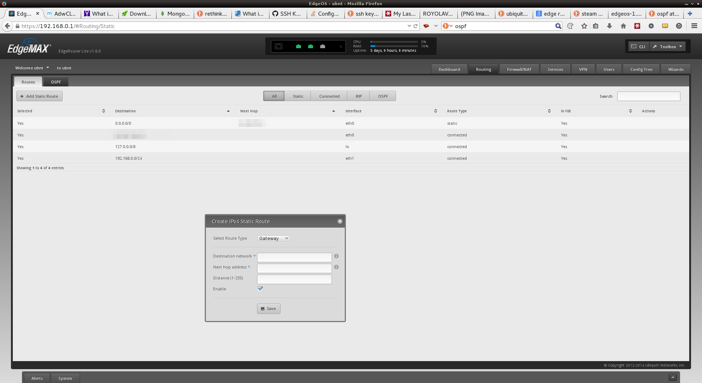
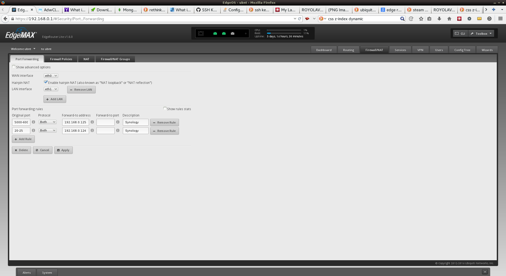
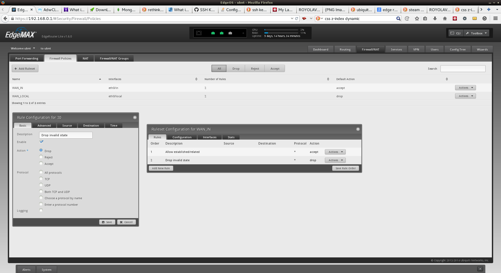
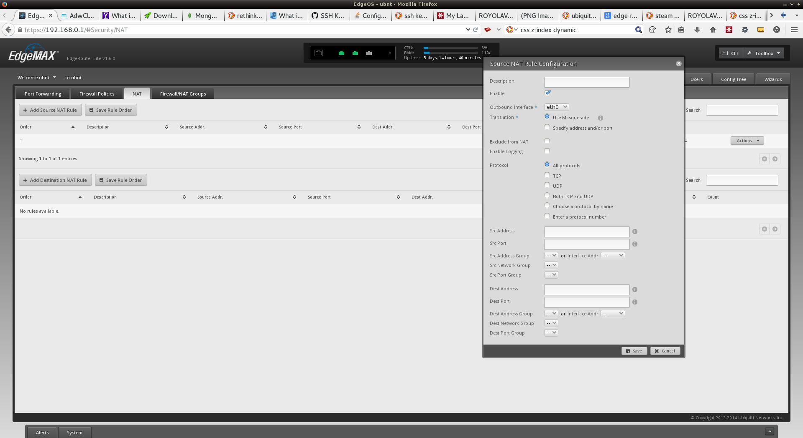
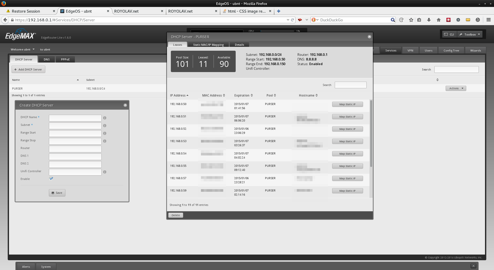
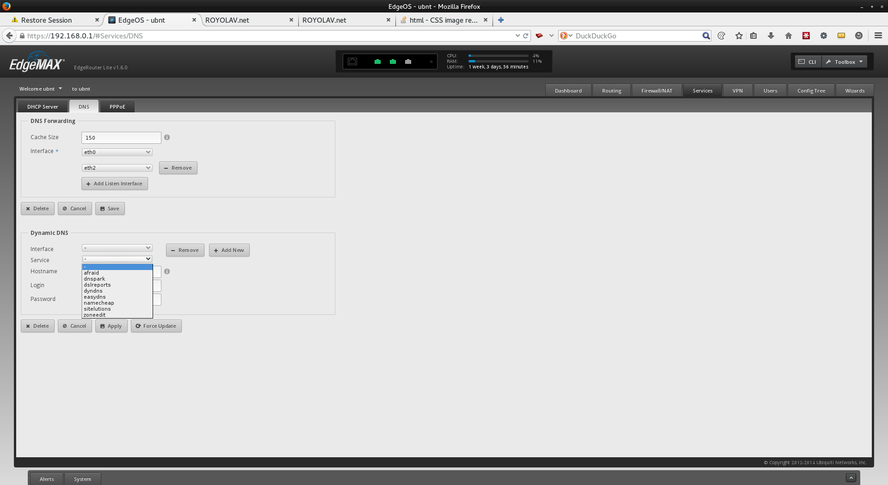
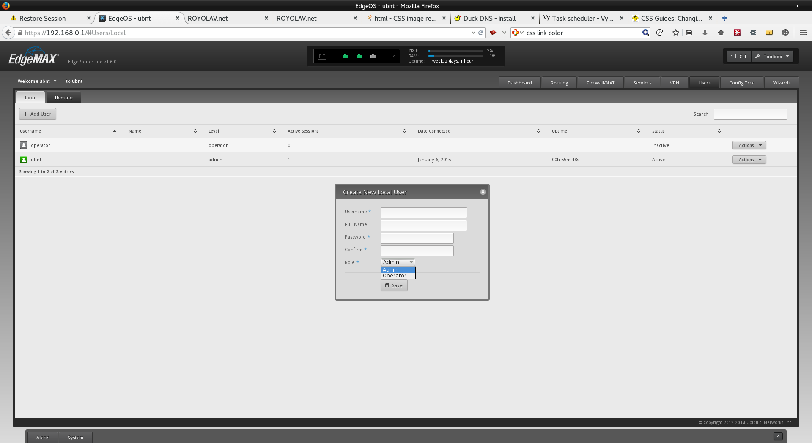
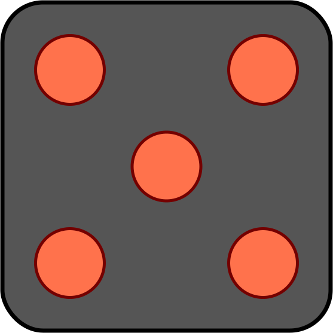

The edge router has a good set of features. On the first page in the interface you can see simple usage graphs. This is also where you change ip adresses of the interfaces. In the top of the UI you can see uptime, CPU usage and RAM usage.
In the next tab you can set up static routes and configure OSPF.
Simple port forwarding.
The edge router lite has a quite advanced firewall UI. In addition to setting access based on ip address and port you can filter based on port state. Under the hood the router uses iptables, which you can acces with the CLI.
The router can be very difficult to set up if you dont know what you are doing. One great example of that is the NAT. The image shows a simple NAT configuration that works. You can choose to use the configuration wizard to set up the router for you. But remember. It will wipe all settings on the router.

The built-in DHCP-server in the router is easy to set up. You can easily look up dhcp leases.

Dynamic dns is easy to set up on this router, but I think it would be
nice
to be able to add other providers in the gui. I think TomatoUSB's ddns
client
is doing this the right way.
I would think you can make your own ddns client update script through
Task Scheduler.
I havent tried
this myself though, but I think it would work.

You can have multiple users on the router. I think this is a nice feature, but without the possibility to have difrent access rights per user, I dont see how this would help me very far. I dont wont to give out admin rights. The operator user-mode is read-only.
Verdict
The router is fast, and I love the feel of the router. I would have loved
the
posibility to add custom
ddns updates easily, and more advanced user management. It is Difficult
to
set up the first time, and i
would not recomend it to anyone without prior experience with networking.
You
cant set up IPv6 DHCP-PD
in the GUI, which is a really basic feature.
All over i would
recomend
it, but only if you know
what you are doing and dont need built-in WIFI.


{kind=link}
{kind=link}
{kind=link}
{kind=link}
{kind=link}
{kind=link}
{kind=link}
{kind=link}